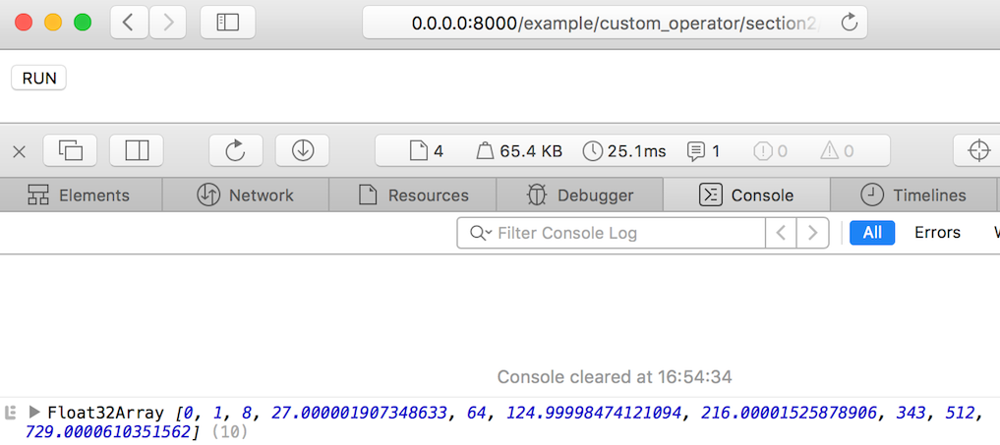

2. Elementwise Operator with Parameters¶
In this section, you will learn about how to convert custom keras layer which is elementwise operation with hyper parameters.
Complete sample code is included in /example/custom_operator/section2.
Example: Pow¶
In section 1, we created square operator. Next, we’ll create general power operator defined as follows:
class PowLayer(keras.layers.Layer):
"""
calculate x^a elementwisely
"""
def __init__(self, a=1, **kwargs):
super(PowLayer, self).__init__(**kwargs)
self.a = a
def call(self, x):
return keras.backend.pow(x, a)
Different from SquareLayer in section 1, PowLayer has a hyper parameter named a.
2.1. Define Custom IR Operator¶
Similar to section 1, we define PowOperator first. Operator.parameters is a dictionary
which contains all hyper parameters of this operator.
from webdnn.graph.operators.elementwise import Elementwise
class PowOperator(Elementwise):
def __init__(self, name, a):
super(PowOperator, self).__init__(name)
self.parameters["a"] = a
2.2. Define Converter Handler¶
Almost is same as section 1.
from webdnn.frontend.keras.converter import KerasConverter
@KerasConverter.register_handler("PowLayer")
def square_converter_handler(converter, keras_layer):
keras_x = converter.get_input_tensor(keras_layer)[0]
webdnn_x = converter.get_variable(keras_x)
# Create operator instance with the hyper parameter
webdnn_operator = PowOperator(None, a=keras_layer.a)
webdnn_y, = webdnn_operator(webdnn_x)
keras_y = converter.get_output_tensor(keras_layer)[0]
converter.set_variable(keras_y, webdnn_y)
2.3. Define Generator Handler¶
register_elementwise_kernel(OperatorClass, code, [parameters])
can receive optional third argument. It’s dictionary with value of parameter name and key of lambda function. This lambda function is
called with an operator instance and returns each parameter value.
from webdnn.backend.webassembly.kernels.elementwise import register_elementwise_kernel
register_elementwise_kernel(PowOperator,
"y = powf(x0, a);",
{ "a": lambda op: op.parameters["a"] })
All parameters specified in the third argument can be used in kernel code.
For other backends, same feature is provided like follows:
from webdnn.backend.fallback.kernels.elementwise import register_elementwise_kernel as register_elementwise_kernel_fallback
from webdnn.backend.webassembly.kernels.elementwise import register_elementwise_kernel as register_elementwise_kernel_webassembly
from webdnn.backend.webgpu.kernels.elementwise import register_elementwise_kernel as register_elementwise_kernel_webgpu
register_elementwise_kernel_fallback(PowOperator,
"y = Math.pow(x0, a);", # JavaScript
{ "a": lambda op: op.parameters["a"] })
register_elementwise_kernel_webassembly(PowOperator,
"y = powf(x0, a);", # C++
{ "a": lambda op: op.parameters["a"] })
register_elementwise_kernel_webgpu(PowOperator,
"y = pow(x0, a);", # Metal (Almost same as C++)
{ "a": lambda op: op.parameters["a"] })
Please be careful that fallback backend kernel is written in JavaScript, webassembly backend kernel is written in C++, and webgpu backend kernel is written in Metal.
Test¶
Let’s test the implementation.
# test.py
import keras
import pow
from webdnn.backend.fallback.generator import FallbackDescriptorGenerator
from webdnn.backend.webassembly.generator import WebassemblyDescriptorGenerator
from webdnn.backend.webgpu.generator import WebGPUDescriptorGenerator
from webdnn.frontend.keras.converter import KerasConverter
# Define Keras model
x = keras.layers.Input((10,))
y = pow.PowLayer(a=3)(x)
model = keras.models.Model([x], [y])
# Convert Keras model into WebDNN graph IR
graph = KerasConverter(batch_size=1).convert(model)
# Generate graph descriptors
WebGPUDescriptorGenerator.generate(graph).save("./output")
WebassemblyDescriptorGenerator.generate(graph).save("./output")
FallbackDescriptorGenerator.generate(graph).save("./output")
<!--index.html-->
<button onclick="main()">RUN</button>
<script src="../../../dist/webdnn.js"></script>
<script type="application/javascript">
async function main() {
let runner = await WebDNN.load("./output");
let x = runner.inputs[0];
let y = runner.outputs[0];
x.set([0, 1, 2, 3, 4, 5, 6, 7, 8, 9]);
await runner.run();
console.log(y.toActual());
}
</script>
The result is like follows.
